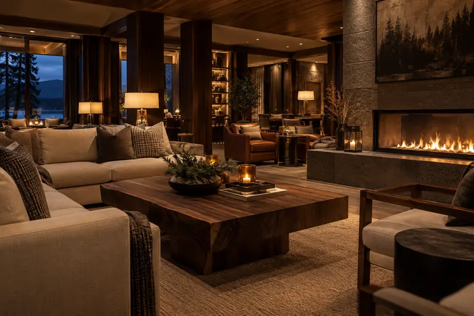

Rouyn-Noranda, Québec / Une intention de séjour
Jackpot CanadaUne halte à imaginer.
Un projet à connaître.
Jackpot Canada est le nom proposé pour un futur hôtel. Ce concept explore l’hébergement et une visite distincte dans un casino physique dont l’existence sur place reste à confirmer.
Découvrir le projetDu concept aux informations concrètes
Préparer un séjour commence par des réponses.
Le projet Jackpot Canada se présente ici comme une idée à développer. Les chambres, les services et les conditions d’accueil ne sont pas encore définis.
Envisager le séjour
Prendre le temps.
Demander l’essentiel.
Le séjour envisagé pour Jackpot Canada doit encore être précisé. Cette page ne décrit pas de chambres disponibles, de prestations incluses ou de tarifs. L’image du salon illustre une intention d’ambiance.
Le confort, selon vos besoins
Avant de choisir une nuitée, demandez la configuration des chambres, les installations réellement accessibles et la prise en compte de vos besoins particuliers. Une illustration ne suffit pas à confirmer ces éléments.
Des conditions à vérifier ensemble
Pour Jackpot Canada, les modalités d’arrivée, le prix total et les conditions de modification ou d’annulation ne sont pas encore connus. Une offre réelle devra les préciser avant que vous preniez un engagement.

Un lieu à établir
Rouyn-Noranda
comme point de départ.
Pour Jackpot Canada, l’adresse ci-contre provient du brief du client. L’usage du lieu comme hôtel et la présence d’un casino physique à cette adresse n’ont pas été établis.
Avant tout déplacement, il faudra vérifier l’établissement réellement ouvert, son adresse et l’identité de la partie qui vous accueille. Cette page ne constitue pas une instruction d’arrivée.
Adresse envisagée dans le brief
264 Av. MurdochRouyn-Noranda, QC J9X 1E7
Canada
Cette adresse est distincte de celle de l’éditeur AdPlus OÜ, indiquée au bas de la page. Aucun itinéraire vers un hôtel en activité n’est confirmé ici.
Le choix de participer
Une soirée choisie.
Des limites personnelles.
Accès non confirmé
Le volet casino de Jackpot Canada reste un projet sans établissement physique ou exploitant confirmé. Le seuil de 19 ans est celui proposé dans le brief; il n’est pas présenté comme une règle générale du Québec. Les casinos de Loto-Québec appliquent un minimum de 18 ans. Les futures conditions d’accès devront être établies séparément.
Fixer ses limites
Décidez d’un budget et d’une durée avant de jouer. N’utilisez que de l’argent dont la perte ne compromettrait pas vos dépenses nécessaires.
Garder une marge de recul
Faites des pauses. Ne tentez pas de récupérer une perte en augmentant les mises et n’empruntez pas pour participer.
Savoir demander de l’aide
Si le jeu devient une source de stress, de secret ou de difficultés financières, vous pouvez en parler à un service spécialisé, même avant une situation de crise.
Les réponses avant la décision
Ce qui est connu.
Ce qui reste à préciser.
Une présentation utile distingue une intention de projet d’un service réellement disponible.
Quand Jackpot Canada ouvrira-t-il?
Aucune date d’ouverture n’est confirmée. Il s’agit d’un concept pour un futur hôtel; les activités d’hébergement et le casino physique sur place ne sont pas établis. Aucun lien avec une offre de jeu en ligne portant un nom semblable n’est confirmé.
Puis-je réserver une chambre dès maintenant?
Non. Ce site ne propose ni disponibilités, ni tarif, ni parcours de réservation. Écrire à l’éditeur pour une question générale ne confirme pas une nuitée ou un droit d’accès au casino.
Les images montrent-elles le futur établissement?
Non. Le paysage boréal et le salon ont été générés par IA. Ce sont des images d’ambiance et de concept, sans valeur de preuve sur le lieu, les chambres ou les équipements du projet.
Pourquoi le projet indique-t-il 19+?
Ce seuil a été proposé dans le brief. Il ne remplace pas les règles de l’exploitant réel, qui n’est pas encore identifié, et ne décrit pas une règle unique pour tous les casinos du Canada. Les casinos de Loto-Québec sont accessibles à partir de 18 ans. L’hébergement et l’admission au casino sont deux questions distinctes.
Que se passe-t-il lorsque je clique sur le courriel?
Votre application de messagerie peut ouvrir un nouveau message à l’adresse fournie pour l’éditeur. Vous choisissez de l’envoyer. Ce site ne transmet rien automatiquement; le destinataire précis et les modalités de traitement restent à établir.
À qui parler si le jeu me préoccupe?
Au Québec, Jeu: aide et référence offre une aide gratuite et confidentielle en tout temps au 1 800 461‑0140. Le service s’adresse aussi aux proches. Le courriel de ce concept n’est pas une ligne d’aide.
Voir les ressources d’aideÉcrire à l’éditeur
Parlons du projet
Jackpot Canada.
Une question sur Jackpot Canada? L’adresse ci-dessous a été fournie comme contact de l’éditeur AdPlus OÜ. Elle sert aux questions générales sur le concept, sans constituer un canal officiel de réservation confirmé.
jpcmuroch@gmail.comL’envoi reste votre choix. Ne joignez pas de documents d’identité, de renseignements financiers ou d’informations sensibles. Consultez la politique de confidentialité avant d’écrire.